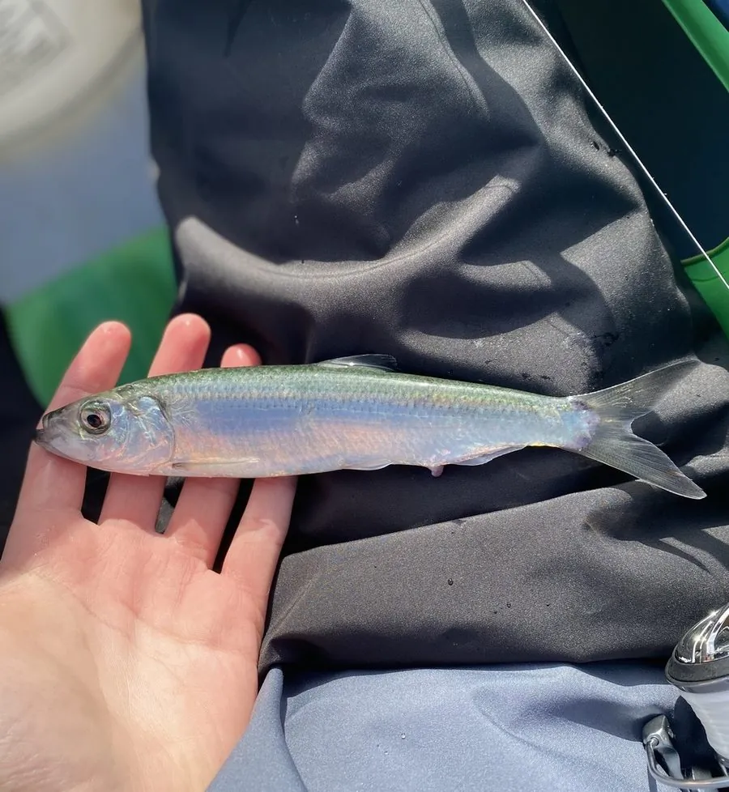

鱼类 · 动物界
太平洋鲱 Clupea pallasii

北太平洋寒温带海域的小型群游鱼类，体侧银亮、侧线不明显，是海洋食物链中承上启下的关键物种，也是重要的经济鱼。
- 分类
- 门脊索动物门纲硬骨鱼纲目鲱形目科鲱科属鲱属
- 栖息环境
- 北太平洋的寒温带中上层海域，春季洄游到近岸海藻和礁石区产卵
- 地理分布
- 北太平洋，包括日本、俄罗斯远东、白令海、阿拉斯加和美国西岸，中国黄海北部曾有分布
- 保护级别
- 暂无评估；中国未列入国家重点保护野生动物名录
物种志
太平洋鲱体呈纺锤形、侧扁，头小，口端位。体色背部蓝绿或青灰，体侧和腹部银白，鳞片较大且容易脱落；侧线不明显，靠头部的感觉孔感知水流。成鱼体长一般 20–30 cm，最大约 45 cm，体重 100–300 g。
太平洋鲱分布于北太平洋，包括日本、俄罗斯远东、白令海、阿拉斯加和美国西岸，中国黄海北部也曾有渔场。它生活在中上层，常结成大群洄游，主食浮游甲壳类如桡足类和磷虾，也吃小型鱼类。春季，鲱鱼群洄游到近岸产卵，把卵黏附在海藻、礁石和浅海底质上，产卵量很大，一片产卵场常常密密麻麻铺满鱼卵。太平洋鲱是鲑鱼、海鸟、鲸类和海豹的重要饵料，在海洋食物链中起着承上启下的作用；它本身也是重要的经济鱼类，可鲜食、腌制或制成鱼粉。目前它没有IUCN 的正式评估，中国未将其列入国家重点保护野生动物名录。
形态与习性
- 食性主食浮游甲壳类如桡足类和磷虾，也吃小型鱼类
- 体长一般 20–30 cm，最大约 45 cm
- 体重通常 100–300 g
- 繁殖春季在近岸产卵，卵黏附在海藻和礁石上
- 侧线侧线不明显，靠感觉孔感知水流
- 生态作用鲑鱼、海鸟、鲸类和海豹的重要饵料
趣味知识
- 太平洋鲱没有明显的侧线，靠感觉孔感知水流变化。
- 它把卵黏附在海藻和礁石上，一片产卵场常常密密麻麻铺满鱼卵。
- 鲱鱼群是鲑鱼、海鸟和鲸类的重要食物，在海洋食物链中承上启下。